Next: Implementing locally Up: Controlling Single Board Heater Previous: Implementing virtually
| 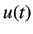 | 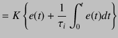 | (5.29) |
|
On taking the Laplace transform, we obtain
| ||
| 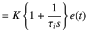 | (5.30) | |
|
By mapping controller given in equation 5.30 to the discrete time domain using forward difference formula, we get
| ||
| 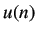 | 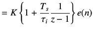 | (5.31) |
|
On cross multiplying, we get
| ||
| 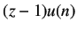 | 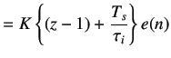 | (5.32) |
|
We divide by
| ||
| 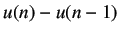 | 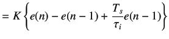 | (5.33) |
|
The PI controller is usually written as
| ||
| 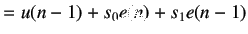 | (5.34) | |
|
where
| ||
| 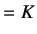 | (5.35) | |
| 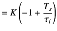 | (5.36) | |